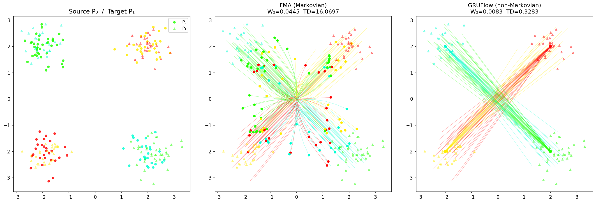
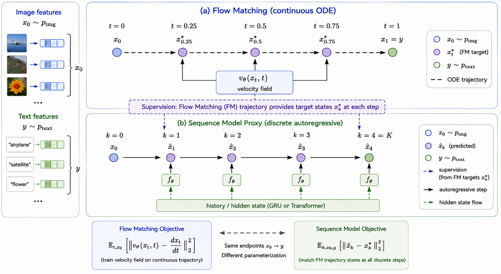
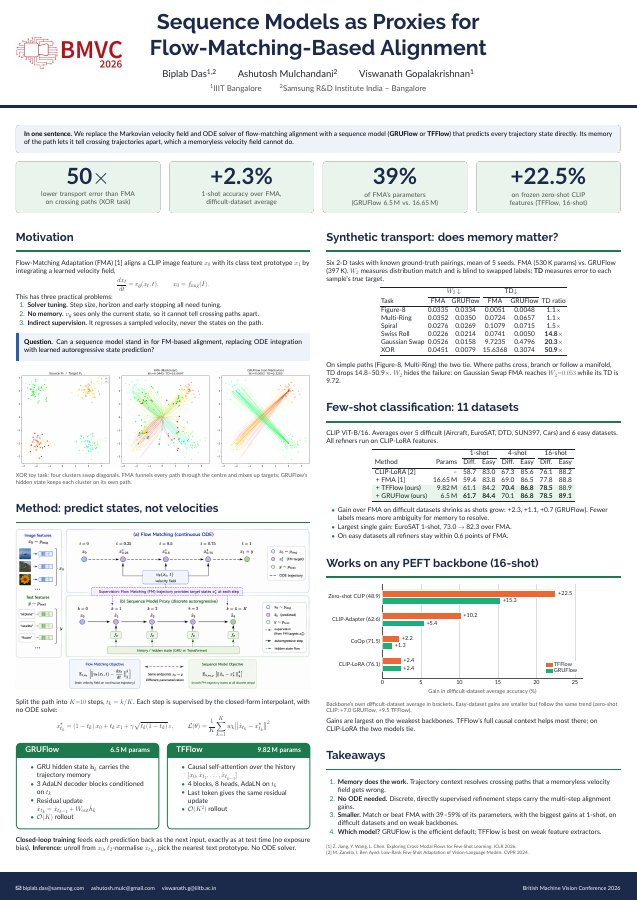

BMVC 2026 · Poster
1IIIT Bangalore2Samsung R&D Institute India – Bangalore
Flow-matching alignment moves image features toward text prototypes with a memoryless velocity field, which cannot tell crossing paths apart. We replace the field and its ODE solver with a GRU or Transformer that predicts every trajectory state directly. Remembering the path resolves the ambiguity, and it takes fewer parameters.
Flow Matching has emerged as a principled framework for cross-modal alignment in few-shot learning, transporting visual features toward semantic text prototypes via a learned continuous velocity field integrated by a fixed-step ODE solver. In this work we ask: can sequence models serve as effective proxies for FM-based alignment, replacing ODE integration with learned autoregressive state prediction? We propose two architectures, GRUFlow and TransformerFlow, that recast cross-modal alignment as a direct state-prediction problem over K discrete trajectory steps, supervised by ground-truth linear interpolants at every step. GRUFlow employs a gated recurrent cell with AdaLN timestep conditioning; TransformerFlow replaces the recurrent cell with causal self-attention over the full trajectory history, providing richer non-Markovian context.
On controlled synthetic transport tasks we show that when the transport assignment is ambiguous (crossing, multi-modal, or manifold-structured paths), the sequence proxy resolves correspondences that a memoryless velocity field cannot, reducing pointwise transport error by up to 50×. Across 11 standard few-shot benchmarks, four PEFT backbones, and three shot settings, both GRUFlow (~6.5 M params) and TFFlow (~9.82 M params) match or improve over FMA (~16.65 M params), by up to +2.3% at 1-shot on difficult datasets, while using as little as 39% of FMA's parameter budget. Both architectures generalise consistently across all four PEFT methods tested, with the strongest absolute gains on weaker feature extractors, confirming that non-Markovian trajectory refinement is architecture-agnostic and most effective precisely where residual cross-modal misalignment is largest.
A flow-matching velocity field vθ(xt, t) sees only the current point and time. Where two trajectories cross, both particles present the same input, so the field has to give them the same velocity. A sequence model also knows where each particle came from, so it can keep them apart.


We split the path from image feature x0 to text prototype x1 into K = 10 steps. The target at step k is the closed-form interpolant x*tk = (1 − tk) x0 + tk x1 + γ√(tk(1 − tk)) ε, so no ODE is solved, and every step gets its own loss.
A GRU cell carries the trajectory memory in its hidden state. Three AdaLN decoder blocks condition on the timestep, and a zero-initialised residual update produces the next state. Rollout is O(K).
Causal self-attention over the full history [x0, x̂1, …, x̂k−1], with four AdaLN-conditioned blocks and eight heads. The last token gives the same residual update. Rollout is O(K²).
Both models train closed-loop, feeding their own predictions back in exactly as at test time. At inference they unroll from x0, ℓ2-normalise the final state and pick the nearest text prototype.
Six 2-D tasks with known ground-truth pairings, mean of 5 seeds. TD is the error to each sample's true target; lower is better.
| Task | FMA TD | GRUFlow TD | FMA ÷ GRUFlow |
|---|---|---|---|
| Figure-8 | 0.0051 | 0.0048 | 1.1× |
| Multi-Ring | 0.0724 | 0.0657 | 1.1× |
| Spiral | 0.1079 | 0.0715 | 1.5× |
| Swiss Roll | 0.0741 | 0.0050 | 14.8× |
| Gaussian Swap | 9.7235 | 0.4796 | 20.3× |
| XOR | 15.6368 | 0.3074 | 50.9× |
CLIP ViT-B/16; every refiner runs on CLIP-LoRA features. Accuracy (%) averaged over 5 difficult and 6 easy datasets.
| Method | Params | 1-shot | 4-shot | 16-shot | |||
|---|---|---|---|---|---|---|---|
| Diff. | Easy | Diff. | Easy | Diff. | Easy | ||
| CLIP-LoRA | – | 58.7 | 83.0 | 67.3 | 85.6 | 76.1 | 88.2 |
| + FMA | 16.65 M | 59.4 | 83.8 | 69.0 | 86.5 | 77.8 | 88.8 |
| + TFFlow (ours) | 9.82 M | 61.1 | 84.2 | 70.4 | 86.8 | 78.5 | 88.9 |
| + GRUFlow (ours) | 6.5 M | 61.7 | 84.4 | 70.1 | 86.8 | 78.5 | 89.1 |
Gain in difficult-dataset average accuracy (points) over each backbone. The weakest backbones gain the most.
| Backbone | Backbone avg. | + GRUFlow | + TFFlow |
|---|---|---|---|
| Zero-shot CLIP | 48.9 | +15.3 | +22.5 |
| CLIP-Adapter | 62.6 | +5.4 | +10.2 |
| CoOp | 71.5 | +1.3 | +2.2 |
| CLIP-LoRA | 76.1 | +2.4 | +2.4 |

The A0 poster summarises the motivation, method and results on one page. Download the PDF (2.1 MB).
@inproceedings{das2026sequence,
title = {Sequence Models as Proxies for Flow-Matching-Based Alignment},
author = {Das, Biplab and Mulchandani, Ashutosh and Gopalakrishnan, Viswanath},
booktitle = {Proceedings of the British Machine Vision Conference (BMVC)},
year = {2026}
}